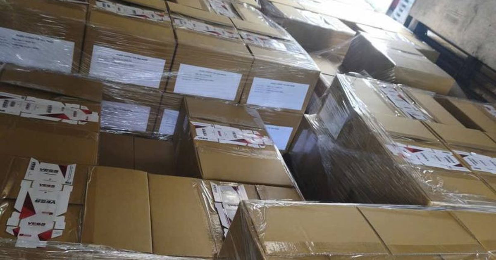

Câu hỏi đầu tiên của hầu hết khách hàng là: gửi hàng đi Campuchia giá bao nhiêu? Vì mỗi lô hàng khác nhau nên không có một con số cố định cho tất cả. Hiểu cách tính cước sẽ giúp bạn so sánh báo giá chính xác và tối ưu chi phí.
1. Những yếu tố quyết định cước vận chuyển
- Trọng lượng thực tế (kg, tấn): cân nặng của hàng và bao bì.
- Thể tích (m³): kích thước dài × rộng × cao của kiện hàng.
- Tính chất hàng: hàng thường, hàng dễ vỡ, hàng nặng, hàng cồng kềnh, hàng cần xe nâng hạ.
- Hình thức gửi: hàng lẻ ghép xe hay thuê nguyên xe (xem bài gửi hàng lẻ hay thuê nguyên xe).
- Điểm giao: Phnom Penh hay các tỉnh xa hơn, giao tận nơi hay nhận tại kho.
- Yêu cầu thêm: giao hỏa tốc, bảo hiểm, bốc xếp.
2. Khối lượng thực và khối lượng quy đổi
Trong vận tải, một lô hàng thường được tính theo giá trị lớn hơn giữa khối lượng thực và khối lượng quy đổi từ thể tích. Lý do: xe tải có giới hạn cả tải trọng lẫn không gian. Hàng xốp, hàng quần áo, thùng rỗng… nhẹ nhưng chiếm nhiều chỗ, nên thể tích mới là yếu tố quyết định.
Cách tính thể tích: Dài × Rộng × Cao (m) = số m³. Hệ số quy đổi từ m³ sang kg có thể khác nhau giữa các đơn vị vận chuyển, vì vậy bạn nên hỏi rõ khi nhận báo giá.
| Ví dụ | Đặc điểm | Thường tính theo |
|---|---|---|
| Thùng sắt, phụ tùng máy | Nhỏ gọn, rất nặng | Khối lượng thực |
| Hàng xốp, đồ nhựa | Nhẹ, cồng kềnh | Thể tích |
| Thùng carton quần áo | Nhẹ vừa, chiếm chỗ | Tùy tỷ lệ, so sánh hai cách |
3. Cách giảm chi phí khi gửi hàng
- Đóng gói gọn: bỏ bao bì thừa, xếp khít, dùng thùng đúng cỡ. Thể tích nhỏ hơn thì cước thấp hơn.
- Gom hàng gửi một lần: nhiều kiện gửi cùng chuyến thường tiết kiệm hơn gửi lắt nhắt.
- Chọn đúng hình thức: hàng ít gửi lẻ, hàng nhiều cân nhắc thuê nguyên xe.
- Báo đúng thông tin ngay từ đầu: loại hàng, kích thước, số lượng chính xác để tránh phát sinh khi kiểm đếm.
- Chủ động về thời gian: gửi hỏa tốc luôn có chi phí cao hơn gửi theo lịch thông thường.
4. Cách nhận báo giá nhanh tại SokMok
Bạn chỉ cần cung cấp: tuyến vận chuyển, loại hàng, số lượng – kích thước – trọng lượng ước tính, địa chỉ nhận. SokMok sẽ tư vấn dịch vụ phù hợp và gửi bảng giá chi tiết. Gọi 0981 491 456 hoặc nhắn Zalo SokMok trong giờ làm việc (Thứ 2 – Thứ 7, 8:00 – 18:00).